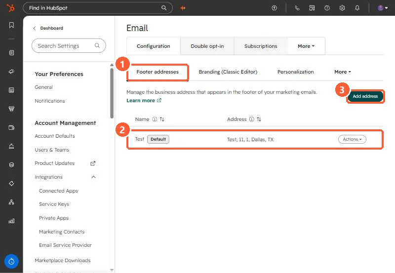

Short answer
In Settings, Marketing, Email, Footer addresses, you manage the business address that appears in marketing email footers. HubSpot pulls it into emails with tokens so every email meets anti-spam requirements. Required fields include company name, address, city, and postal code. My demo's default is a test address. Multiple office locations need Marketing Hub Enterprise.
1. The Footer addresses tab
Open email settings. Configuration opens on Footer addresses.


2. Things to check
- The Default address is used unless an email chooses another office location.
- A test or old address here shows on every marketing email. Mine says Test, which would be wrong in a real account.
- If you build a custom footer in the design manager, it must still include the required address and unsubscribe tokens.
The same Configuration tab has Branding and Personalization. See personalization token defaults.